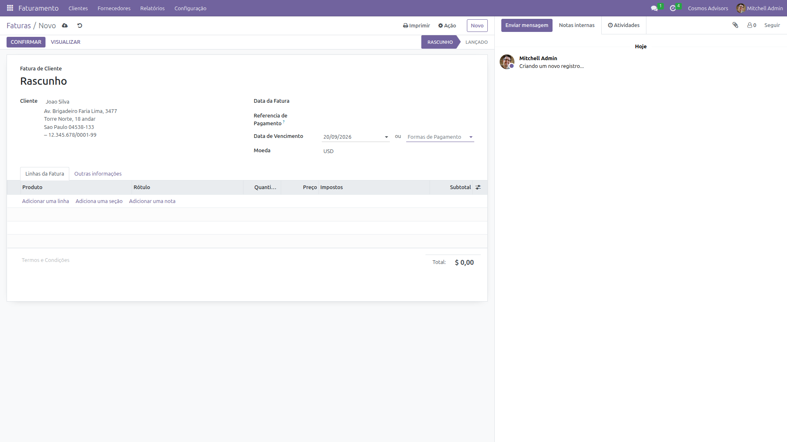

Visão Geral
O que é uma Fatura e por que emitir
Uma Fatura é o documento oficial que cobra o cliente por um serviço prestado. Ela gera lançamentos contábeis automaticamente e controla o recebimento.
No Odoo, o fluxo é: Rascunho → Lançado → Pago. Cada status gera impactos contábeis diferentes.
Passo a Passo
Como emitir uma nota fiscal
Acessar o Faturamento
No menu superior, clique em Faturamento. A lista de faturas mostra todas as emitidas.
Criar Nova Fatura
Clique em NOVO. O formulário de fatura será aberto.

Preencher Cabeçalho
Preencha os dados principais:
| Campo | Obrigatório? | Descrição |
|---|---|---|
| Cliente * | Sim | Quem será cobrado |
| Data da Fatura | Sim | Data de emissão |
| Referência | Não | Número do contrato ou pedido |
| Condições de Pagamento | Não | Prazo (ex: 30 dias) |
Ela ajuda o cliente a identificar a fatura no extrato bancário.
Adicionar Linhas de Produto
Cada linha representa um item/serviço faturado:
| Campo | Exemplo |
|---|---|
| Descrição | Consultoria Financeira - M&A |
| Quantidade | 10 (horas) |
| Preço Unitário | R$ 5.000,00 |
| Total | R$ 50.000,00 (calculado automaticamente) |
Salvar e Confirmar
Após preencher tudo:
- Ctrl+S → Salva como Rascunho
- Confirmar → Muda para "Lançado" (documento fiscal emitido)
- Registrar Pagamento → Registra o recebimento

Registrar Pagamento
Após a confirmação, o botão "Registrar Pagamento" aparece:
- Clique no botão
- Selecione a forma de pagamento
- Confirme
A fatura muda para "Pago" e o lançamento bancário é criado.
Status da Fatura
| Status | Significado | Ação Disponível |
|---|---|---|
| Rascunho | Em edição | Editar, Excluir |
| Lançado | Documento emitido | Registrar Pagamento |
| Pago | Recebido | Imprimir, Enviar |
| Cancelado | Anulado | Nenhuma |
Fluxo Completo
Veja em tempo real como emitir uma fatura

GIF: Criando uma fatura no Odoo
✨ Boas Práticas
- Preencha a referência para facilitar identificação
- Use linhas separadas por serviço
- Confirme rapidamente — rascunhos não geram relatório
- Registre o pagamento para manter fluxo de caixa
- Revise antes de confirmar — depois de Lançado, não pode editar